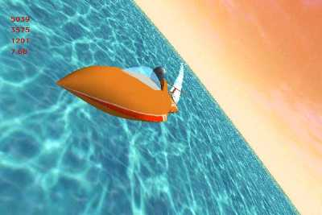

WindRacer a changé de nom: il s'appelle désormais WaterRace.

Le concept s'est également élargi: il ne s'agit plus d'un simple jeu de course de funboard (c.a.d. de planche à voile), mais d'un jeu de course nautique complet, où le joueur dispose de plusieurs types de bateaux. Il affrontera ses concurrents sur de nombreux terrains: lagon, banquise...
WaterRace fait parti des projets de French Touch. Toutes les infos et les screenshots se trouvent donc sur le site de French Touch.

L'ancienne page de WindRacer avec l'historique et tous les screenshots est toujours disponible ici.